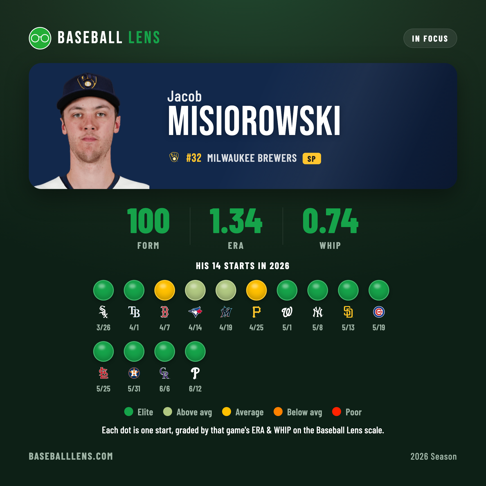
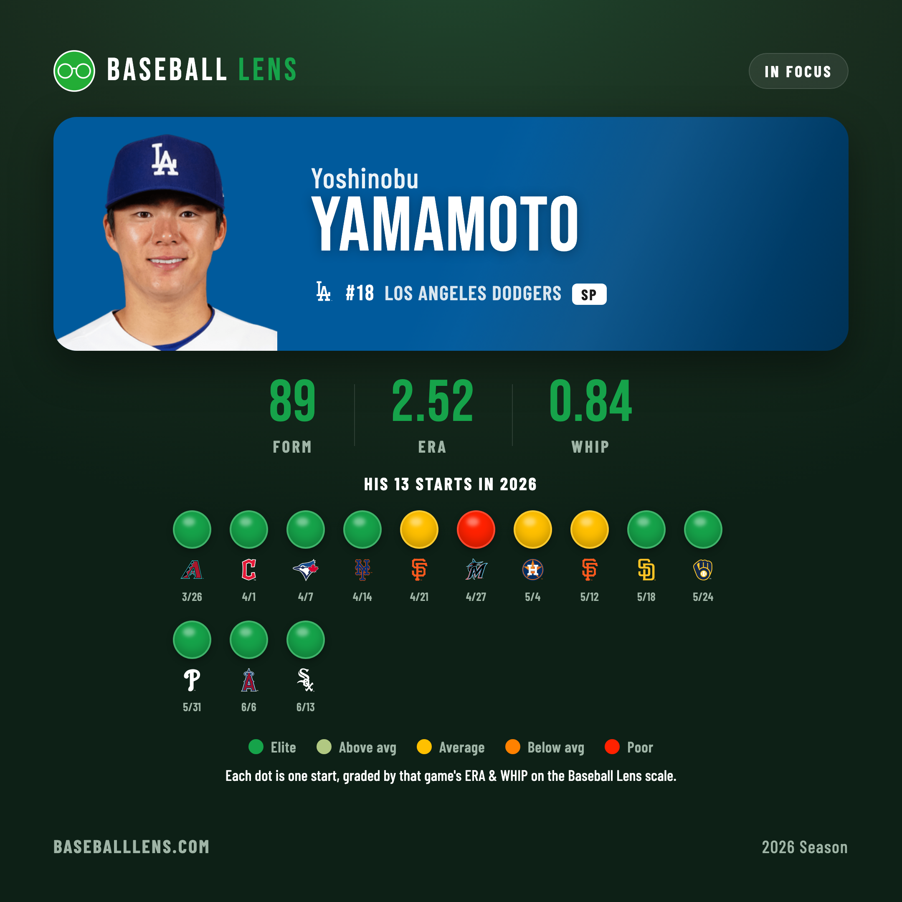
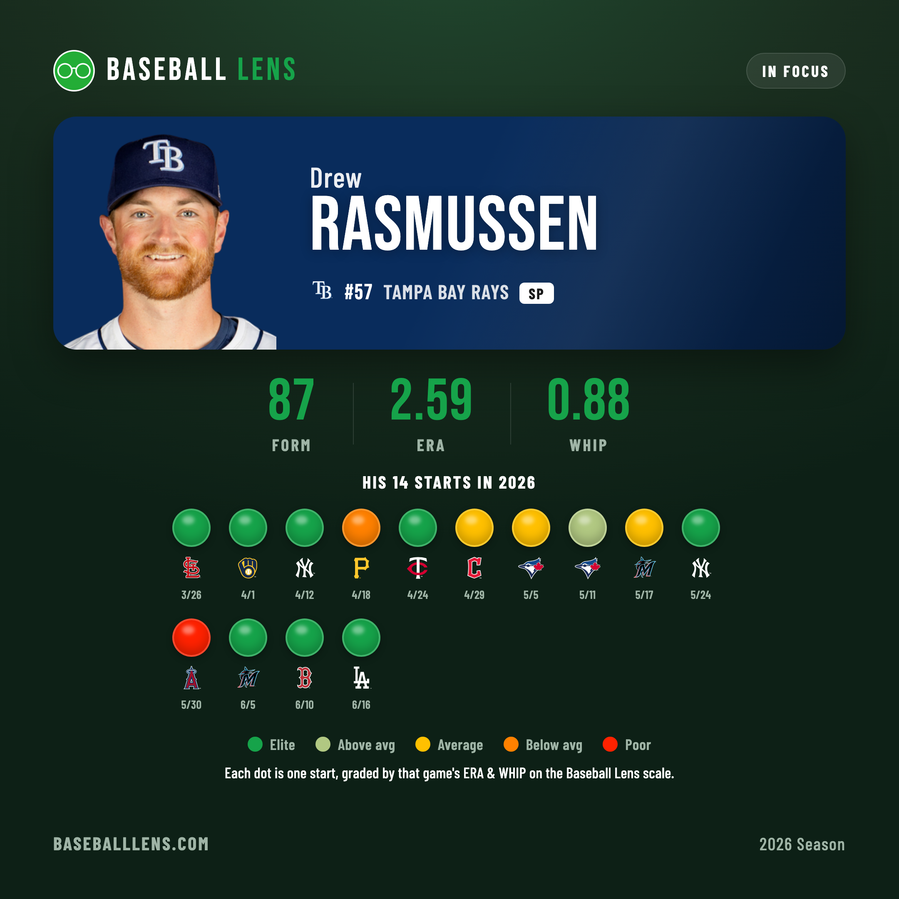
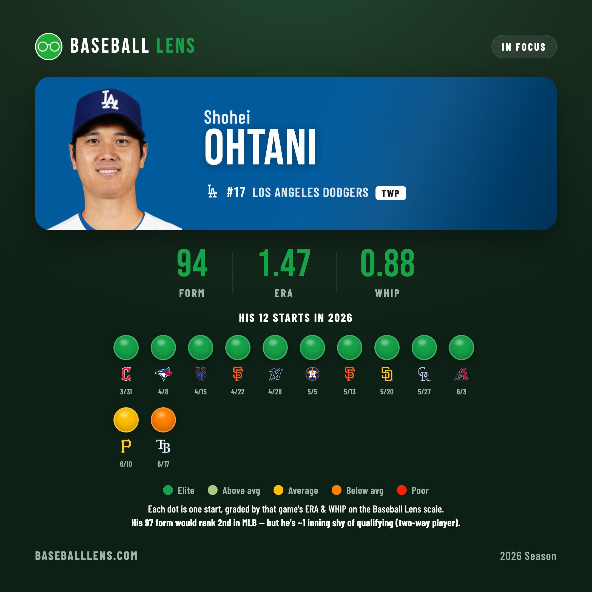
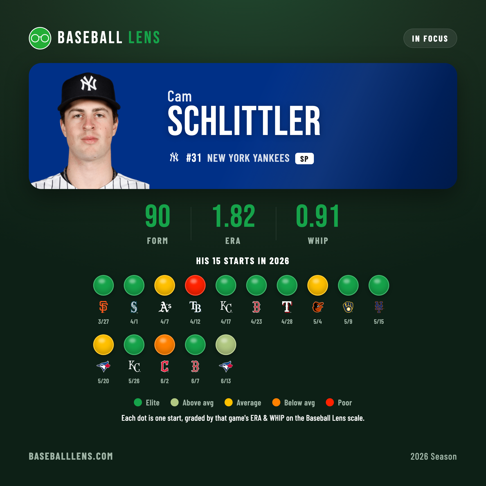

Never Below Yellow
The form board rewards two things at once — how good you've been all year, and how hot you are right now. Five arms are acing both. Only one has never had a bad day.
The Baseball Lens form score is built to be honest about the present tense. It takes a pitcher's season ERA and WHIP, paints them on a 0–100 scale, then blends in the last 28 days, weighted 85/15. The season number says how good you are; the recent slice says whether you're climbing or cooling. Run every qualified starter through it and five names rise.
| # | Pitcher | Form | season · recent |
|---|---|---|---|
| 1 | Jacob Misiorowski MIL | 100 | 100 · 100 |
| 2 | Shohei Ohtani* LAD | 94 | 97 · 77 |
| 3 | Cam Schlittler NYY | 90 | 92 · 76 |
| 4 | Yoshinobu Yamamoto LAD | 89 | 87 · 100 |
| 5 | Drew Rasmussen TB | 87 | 85 · 98 |
* Ohtani's rate stats would rank 2nd, but as a two-way player he's a start short of qualifying. More below.
That 15% is why the board isn't just an ERA leaderboard. It's why Yoshinobu Yamamoto, mid-pack on the season, is climbing; why Drew Rasmussen is on the list at all; and the reason Jacob Misiorowski sits at a clean, almost suspicious 100.

Misiorowski: both needles pinned
A perfect form score takes a perfect season and a perfect month, and the Brewers rookie has both. His full-year line — 1.34 ERA, 0.74 WHIP, 13.6 strikeouts per nine — would top the board on its own. But the recent slice is maxed too: since May 1 he's reeled off eight straight green starts, seven of them scoreless, capped June 12 by nine innings, one hit, no walks and fifteen strikeouts against Philadelphia.
Run his 14 starts through the color scale and you get the season's real curiosity: ten greens, two light-greens, two yellows — and nothing below. No orange. No red. His two worst days were merely average. Everyone else in the top five has cratered at least once; Misiorowski simply never has. Both needles, season and recent, are pinned.
The recent slice reshuffles everything
This is where the 15% earns its keep — it's pulling the board in opposite directions. Yamamoto is the clearest riser. His season ERA (2.52) is the highest of the five and his form base the lowest, dinged by a three-week wobble in late April and May. But his recent grade is a perfect 100: his last five starts are all green, the most recent an 8⅓-inning, one-hit clinic against the White Sox. Season says fifth; the present tense says top three.

Rasmussen is on the list because of the recent slice. His season has texture — an orange in Pittsburgh, a red in Anaheim, a scatter of yellows. On full-year numbers he's an afterthought. Then June arrived: a one-hit shutout of Miami, a thirteen-strikeout shutout of Boston, seven more strong against the Dodgers. His recent grade (98) drags a 2.59-ERA season all the way up to a top-five 87. No other metric would have found him.

Ohtani: the uncapped ace, slipping
By form alone the second-best starter in baseball is a two-way DH. Ohtani's season line is absurd — 1.47 ERA, 0.88 WHIP, ten straight greens to open the year, a six-inning no-hit flirtation in Colorado — good for a 97. But the recent slice has just dipped for the first time: a yellow in Pittsburgh, an orange in Tampa, his only two non-green starts of the year arriving back to back. The blend pulls him to 94 — still second, now trending down.
And he's there with an asterisk. Qualifying for a rate-stat board takes one inning per team game; the Dodgers have played 75 and Ohtani, throttled by his bat-and-arm workload, sits at 73⅔ — literally one start short of the conversation he'd otherwise lead.

Schlittler: gaudy, with scars
Cam Schlittler's 1.82 ERA is the second-prettiest number in the group, and he owns the best single line not named Misiorowski — eight innings of one-run ball in Boston. But he carries the board's only red (five innings, three runs, seven hits to Tampa Bay) and an ugly orange in Cleveland in June, the latter inside the recent window. He misses fewer bats than the others (9.7 K/9), lives nearer to contact, and his recent grade has nudged a 92 season mark down to 90.

The shape of dominance
Five pitchers, five different routes to the top of the board. Yamamoto and Rasmussen are surging into it; Ohtani and Schlittler are easing off the gas; all four have, at some point, handed in a start the scale grades below average.
And then there's Misiorowski — peaking and spotless, the only arm in baseball the form board can't find a hole in. Fourteen starts, three months, two elite numbers and one that doesn't exist on his ledger: a bad day.
Stats via the MLB Stats API. Form scores, colors and the 85/15 recent weighting are Baseball Lens's own. Numbers through June 19, 2026.